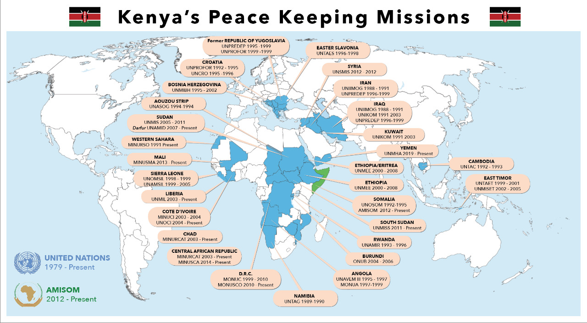

This decision was reached at after a series of incidents of boarder attacks and incursions by the militia group along the common border with Somalia where, Kenyan AID workers in Dadaab, a couple in Kiwayu Safari villages in Lamu and abduction of a French tourist lady were witnessed. In light of continued threats, to the Republic, the Government of Kenya invoked article 51 of the UN Chatter in order to secure the right to self – defence from these unwarranted attacks by the militia group. To sustain the gains made by KDF after few months in Somalia, the UN and AU invited Kenya to incorporate KDF into AMISOM in November, 2011. The troops from Kenya were later formally integrated into AMISOM on February 22, 2012 via the United Nations Security Council Resolution 2036 (2012). Resolution 2036 expanded the AMISOM mandate by increasing the manning level from 12,731 to 17,731. Kenya’s military intervention in Somalia re-energised regional and international resolve to address the al-Shabaab’s threat to peace and security. The revised mandate required AMISOM to establish its presence in four sectors, in coordination with local security forces, so as to reduce the al-Shabaab threat and set conditions for restoration of state authority. KDF troops were assigned to Middle Juba and Lower Juba regions that were designed as Sector 2.
